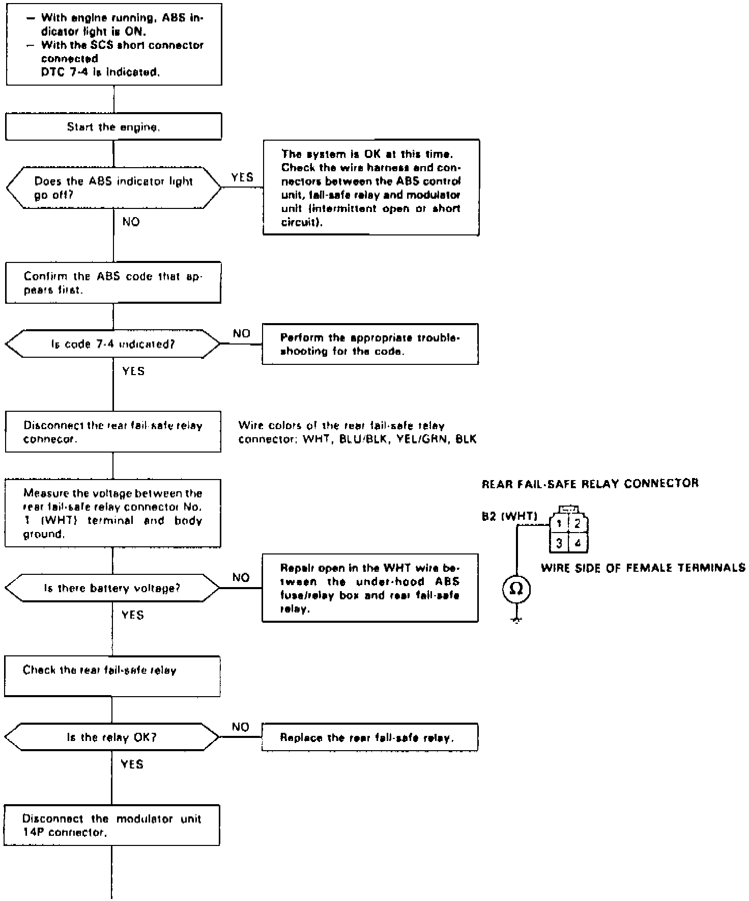
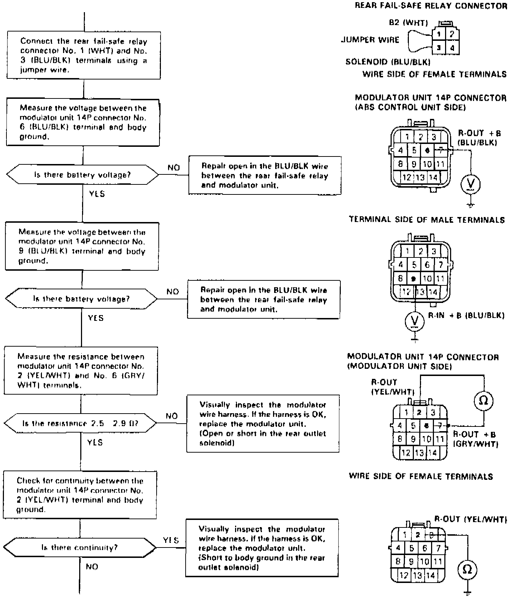
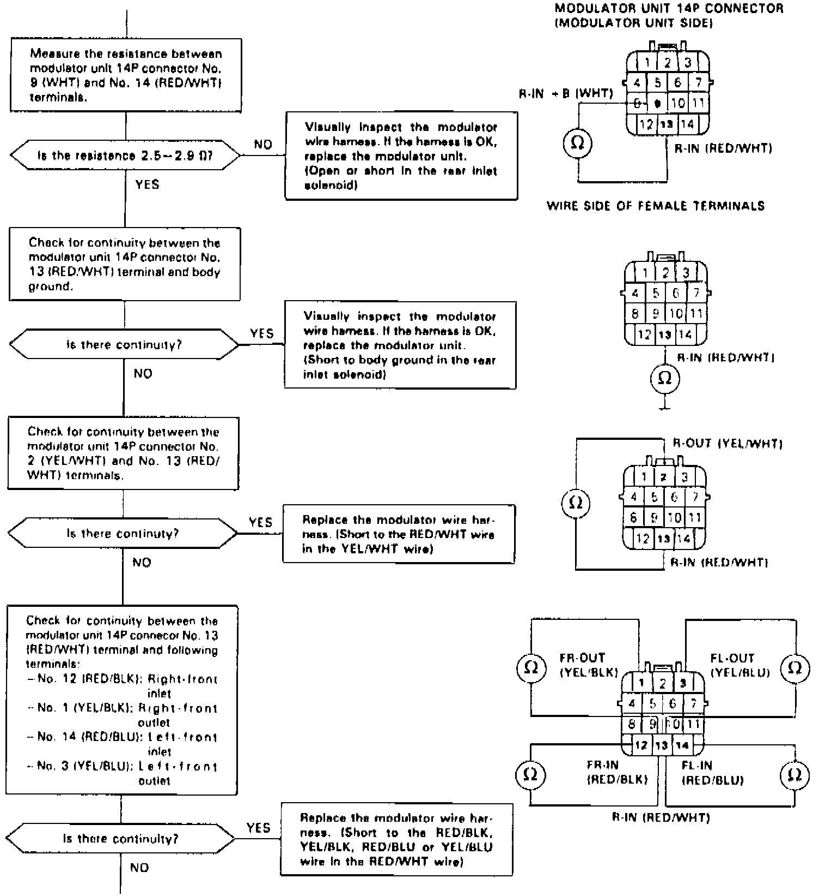
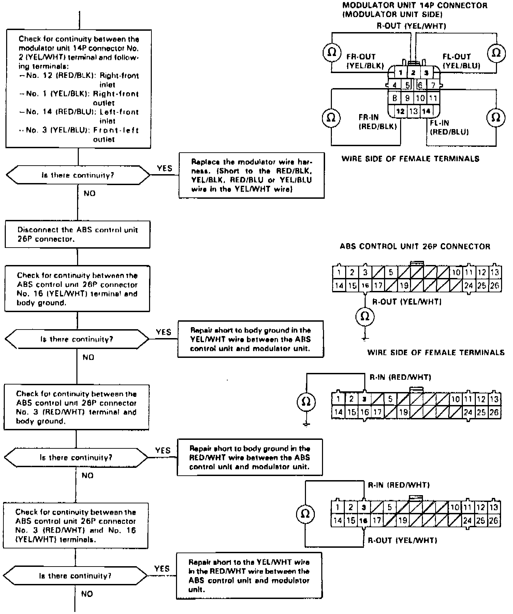
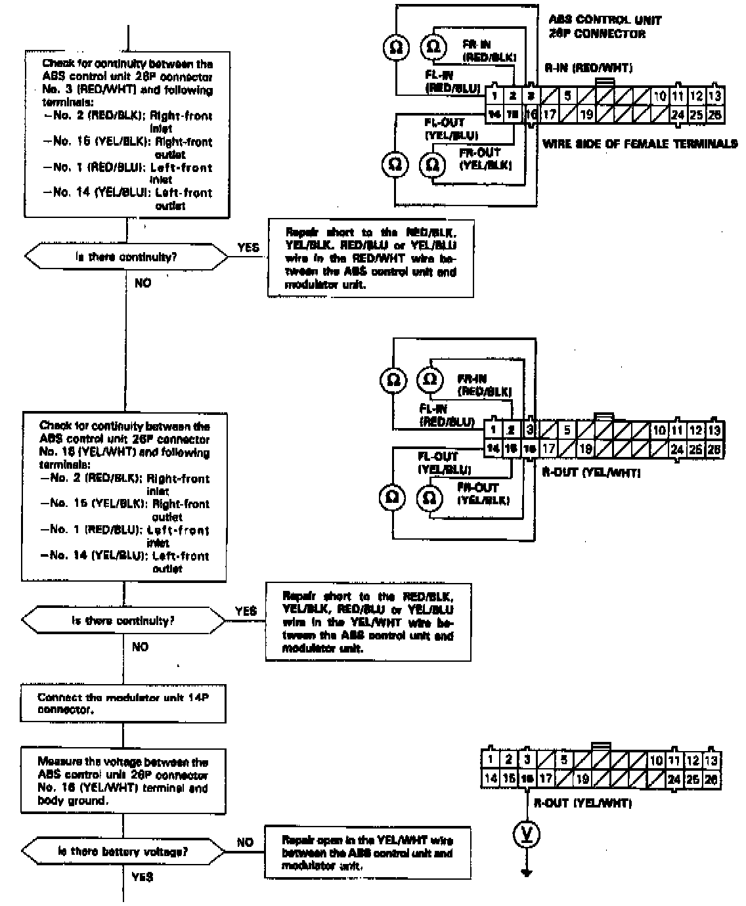
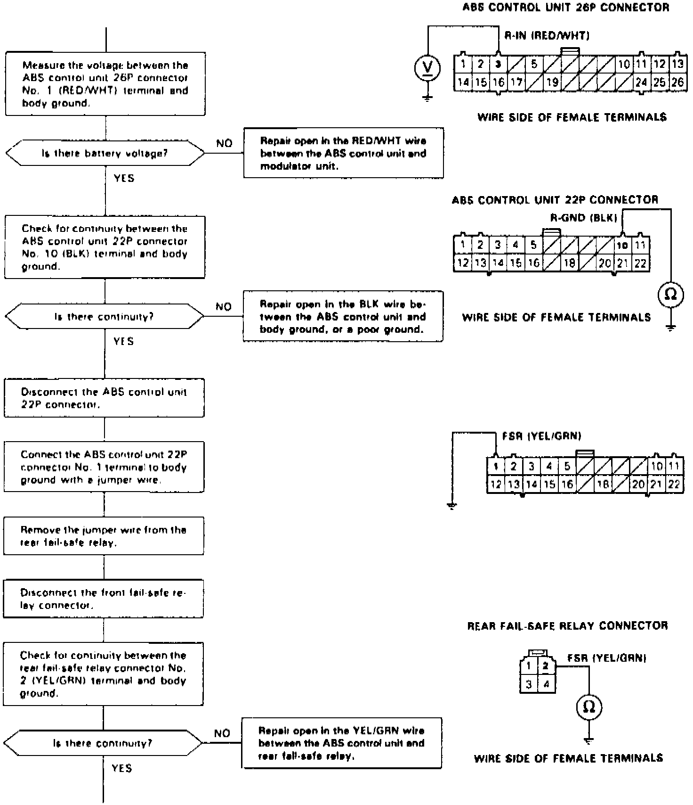
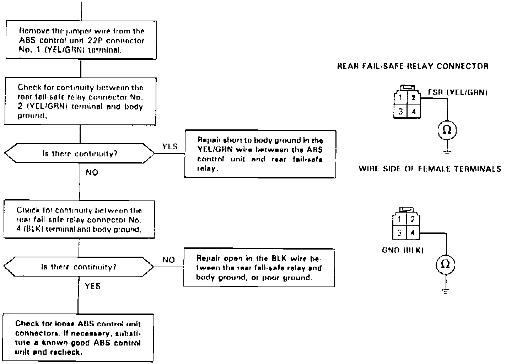

DTC 7-4
Fig. 43 Code 7-4: Rear Solenoid Diagnosis (Part 1 Of 7):

Fig. 43 Code 7-4: Rear Solenoid Diagnosis (Part 2 Of 7):

Fig. 43 Code 7-4: Rear Solenoid Diagnosis (Part 3 Of 7):

Fig. 43 Code 7-4: Rear Solenoid Diagnosis (Part 4 Of 7):


Fig. 43 Code 7-4: Rear Solenoid Diagnosis (Part 6 Of 7):

Fig. 43 Code 7-4: Rear Solenoid Diagnosis (Part 7 Of 7):

Diagnostic Trouble Code (DTC) 7-4: Rear Solenoid Diagnosis
During the initial diagnosis, after the fail-safe relays are turned on, and during the regular diagnosis, the ABS control unit monitors the voltage from the battery for the six solenoids (when the ABS is not functioning).
If the detection circuit for the rear solenoids detects 0 V, the ABS control unit keeps the ABS indicator light on after the engine is started. It turns the ABS indicator light on again if it detects 0 V after the light goes off.
Possible causes:
- Rear fail-safe relay stuck OFF
- Open circuit in the rear solenoid drive circuits between the under-hood ABS fuse/relay box and ABS control unit
- Short circuit to body ground in the rear solenoid drive circuits between the solenoids and ABS control unit
- Faulty rear solenoid drive transistor (ON) in the ABS control unit
The ABS control unit momentarily outputs the ON signal to each solenoid (too momentary to turn the solenoid on) during the initial diagnosis, and each time the car is started, to check the voltage from the battery with the detection circuit. If the detection circuit for the roar solenoids detects battery voltage at this time, the ABS control unit keeps the ABS indicator light on. It turns the ABS indicator light on again if it detects the battery voltage when the car is started.
Possible causes:
- Short circuit to power in the rear solenoid drive circuits between the solenoids and ABS control unit
- Faulty rear solenoid drive transistor (OFF) in the ABS control unit
- Short circuit to power in the rear solenoid drive circuits in the modulator wire harness or solenoids
- Short circuit to the rear solenoid outlet circuit in the inlet circuit between the solenoids and ABS control unit
- Short circuit to the right-front or left-front solenoid inlet or outlet circuit in the rear solenoid inlet or outlet circuit between the solenoids and ABS control unit.